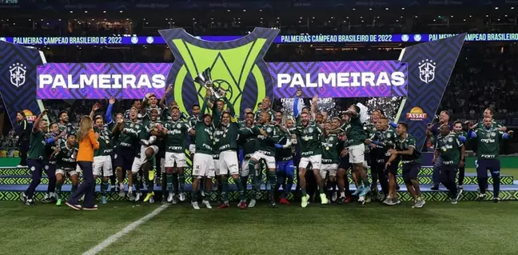

Palmeiras campeão Brasileirao pela décima primeira vez.
Palmeiras assina seu décimo título desde 2014.
- Libertadores 2021 e 2021;
- Copa do Brasil: 2015 e 2020;
- Campeonato Brasileiro: 2016, 2018, 2022;
- Campeonato Paulista 2020 e 2022;
- Recopa Sul-Americana: 2022.
A Primeira Academia
1961 a 1970
O padrão de qualidade do futebol palmeirense comandado por aquele que viria a ser o símbolo da excelência com a bola nos pés, Ademir da Guia fez com que o clube de Palestra Italia fosse chamado de Academia de Futebol nos anos 60, já que dava aulas aos rivais enquanto colecionava conquistas pelo país. Assim teve início a Primeira Academia de ídolos como Valdir de Morais, Djalma Dias, Djalma Santos, Julinho, Ademir, Servílio e outros. No cenário estadual, foram duas taças, em 1963 e 1966, que, somadas à de 1959, impediram que o Santos conquistasse 12 títulos paulistas consecutivos. Em 1965, já liderados pelo técnico argentino Filpo Nuñes, os jogadores do Palmeiras venceram a segunda competição nacional mais importante da temporada, o Rio-São Paulo, com atuações destacadíssimas. Ao longo da campanha, emendou goleadas contra os principais rivais: foram sete gols no Santos, cinco no Botafogo em pleno Maracanã, cinco no São Paulo e mais quatro no Vasco . O título máximo foi conquistado em outra goleada diante do Botafogo, desta vez no Pacaembu. No mesmo ano de 1965, o Palmeiras foi Brasil por 90 minutos. Todo o elenco e a comissão técnica alviverde foram convocados pela CBD para inaugurar o estádio do Mineirão, em Belo Horizonte, e representar a Seleção Brasileira na disputa da Taça Inconfidência, diante da seleção do Uruguai. E no dia que vestiu verde-amarelo, o Palmeiras foi vitorioso: 3 a 0 diante da celeste olímpica. A partida foi a primeira e única em que um time inteiro, com reservas, representou a Seleção. No ano anterior, em 1964, o Palmeiras havia ganhado a Taça do Quarto Centenário do Rio de Janeiro batendo a seleção do Paraguai por goleada, 5 a 2, e vencendo o Peñarol do Uruguai na final. No período, o Verdão também fez suas primeiras partidas pela Libertadores. Campeão brasileiro de 1960, o time chegou à final do torneio sul-americano logo em sua primeira participação, em 1961 sete anos depois, em 1968, o Alviverde foi novamente vice-campeão. Ao final dos anos 60, o Palmeiras acrescentou mais três taças à sua galeria de títulos nacionais. O ano de 1967 foi histórico para o Palmeiras e para o futebol brasileiro: campeão da Taça Brasil e do recém-criado Torneio Roberto Gomes Pedrosa, a equipe confirmou por duas vezes no mesmo ano o posto de melhor do país. O clube também tornou-se tetracampeão brasileiro em 1969 após conquistar seu segundo título do Robertão e faturou o Torneio Ramón de Carranza, na Espanha, ao bater o Real Madrid na decisão. Ainda nesta década, o clube deu início a outra grande reforma no estádio Palestra Italia, no qual a arquibancada foi totalmente reconstruída e passou a ter mais do que o dobro da capacidade anterior. O campo do estádio foi elevado, gerando, assim, o nome de “Jardim Suspenso” no subsolo, foram construídos vestiários. A reinauguração aconteceu em 7 de setembro de 1964, na vitória do Palmeiras por 2 a 0 sobre a Esportiva de Guaratinguetá, pelo Campeonato Paulista.
Segunda Academia
1971 a 1980
Pouco tempo após o fim da Primeira Academia, novos reforços se uniram aos remanescentes Dudu e Ademir da Guia na formação da Segunda Academia, que desfilou talento pelos gramados na mesma proporção em que conquistou títulos o time foi três vezes campeão paulista (uma delas de forma invicta), foi bicampeão brasileiro, faturou mais dois Troféus Ramón de Carranza na Espanha (batendo o Español em 1974 e o Real Madrid em 1975) e venceu o Torneio de Mar del Plata na Argentina (superando Peñarol, Boca Juniors e San Lorenzo), entre outras conquistas. No período, alguns craques ganharam destaque e se tornaram ídolos, como o goleiro Leão, os zagueiros Luís Pereira e Alfredo, os atacantes Leivinha, Edu Bala, César Maluco e Nei e, mais tarde, o meia Jorge Mendonça. Em 1972, já sob o comando de Oswaldo Brandão (campeão como técnico dos Paulistões de 1947 e 1959 e do Brasileiro de 1960) e um ano depois de ser prejudicado na final do Campeonato Paulista contra o São Paulo, o Palmeiras fez história e conquistou todos os títulos que disputou. Os principais foram o Paulistão, vencido de forma invicta diante do mesmo São Paulo na decisão, e o Brasileirão, ganho pela quinta vez depois de empatar com o Botafogo na final, no Morumbi (o Palmeiras ficou com a taça por ter somado mais pontos que o rival ao longo da competição). O ano de 1972 também foi importante para o futsal palmeirense. Na ocasião, o time principal venceu quase todas as competições que disputou: Estadual (invicto), Metropolitano, Torneio Início (invicto) e bicampeonato Sul-Americano (invicto) o Verdão já havia se tornado o primeiro campeão continental de futsal na edição de estreia da competição, em 1970. O único título que o Alviverde não levou foi a Taça Brasil (sagrou-se vice-campeão). No basquete, o Palmeiras conquistou seus dois principais títulos no período: Copa Interamericana de Basquete (1974) e Campeonato Brasileiro de Basquete (1977). Ainda no futebol, com a manutenção do elenco vencedor de 1972, o Verdão sagrou-se hexacampeão brasileiro em 1973 demonstrando enorme superioridade sobre os rivais: em 40 jogos, foram apenas 3 derrotas e 13 gols sofridos. Em 1974, o título paulista veio acompanhado de um sabor a mais: com a vitória por 1 a 0 sobre o Corinthians na decisão, o Palmeiras aumentou para 20 anos o jejum de títulos do adversário. Dois anos depois, o clube faturou seu 18º título do Campeonato Paulista batendo o recorde de público do estádio Palestra Italia ao vencer o XV de Piracicaba por 1 a 0, na partida final, diante de 40.283 pagantes.